ODOO 19 · COMMUNITY & ENTERPRISE
Manage job workers, raw-material movement, subcontractor stock, job-work receipts, scrap, yield, costing, quality, vendor collaboration and compliance from one integrated Odoo workflow. Job Work 360 is a control tower built on top of Odoo's native subcontracting, inventory, purchase and accounting – it does not replace them.
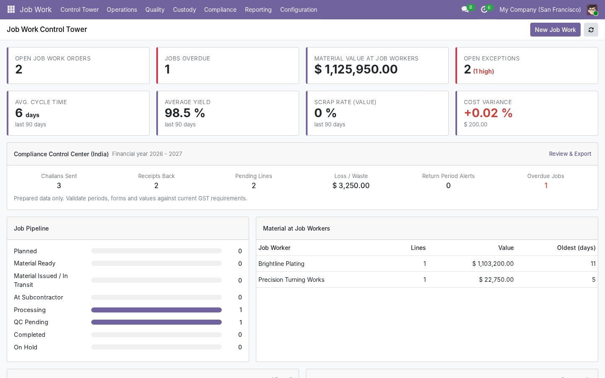
Job Work Order → Material Issue → Subcontractor Stock → Processing → Receipt → Scrap / Yield → Quality → Costing → Reconciliation → Vendor Performance → Compliance
Issue → Process → Receive → Inspect → Reconcile → Close, with a clear status (Draft, Planned, Material Ready, Issued / In Transit, At Subcontractor, Processing, QC Pending, Completed, Reconciled, Closed) plus On Hold, Overdue, Disputed and Rework paths.
Know exactly what material is lying with every job worker, its value and how long it has been there. A dedicated custody location is created per job worker under the subcontracting location.
Record actual output, consumption, process scrap (including returnable scrap such as brass turnings), shortages, rejection, rework and approved losses – all as real stock moves.
Unaccounted = Sent − Consumed − Returned − Scrap − Approved Loss. Shortage, excess scrap, low yield, over-consumption, overdue, invoice and quality exceptions are raised automatically with severity and tolerance settings.
Expected vs actual raw material, job-work charges, freight, inspection, scrap impact and other costs, cost per accepted unit and cost variance – in company currency, multi-currency aware.
Bills are compared with the accepted quantity and the approved job rate. Quantity, rate and extra-charge variances are blocked until approved, put on hold or disputed – with audit trail.
Job workers accept or reject jobs, confirm material receipt, start, report production / scrap / rejection / rework, request material, upload certificates and delivery documents and submit completion – mobile friendly.
Job-level inspection with accepted, rejected, rework and scrap quantities, acceptance tolerance, automatic NCR and rework job creation. Works without Odoo Enterprise Quality.
Weighted scorecards (on-time, quality, yield, scrap, material variance, cost variance, responsiveness) with weights configurable per company, grades A–D.
Required, sent, received, accepted, rejected, rework, scrap, yield and material still at the job worker – at a glance.
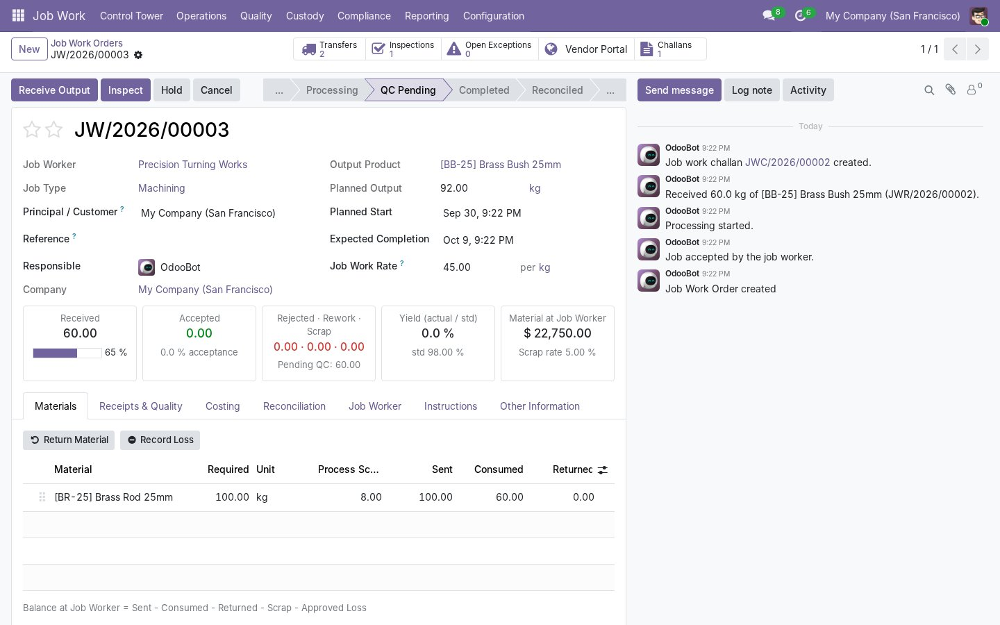
Standard consumption is proposed from the bill of material ratio; scrap can be received back as a by-product.
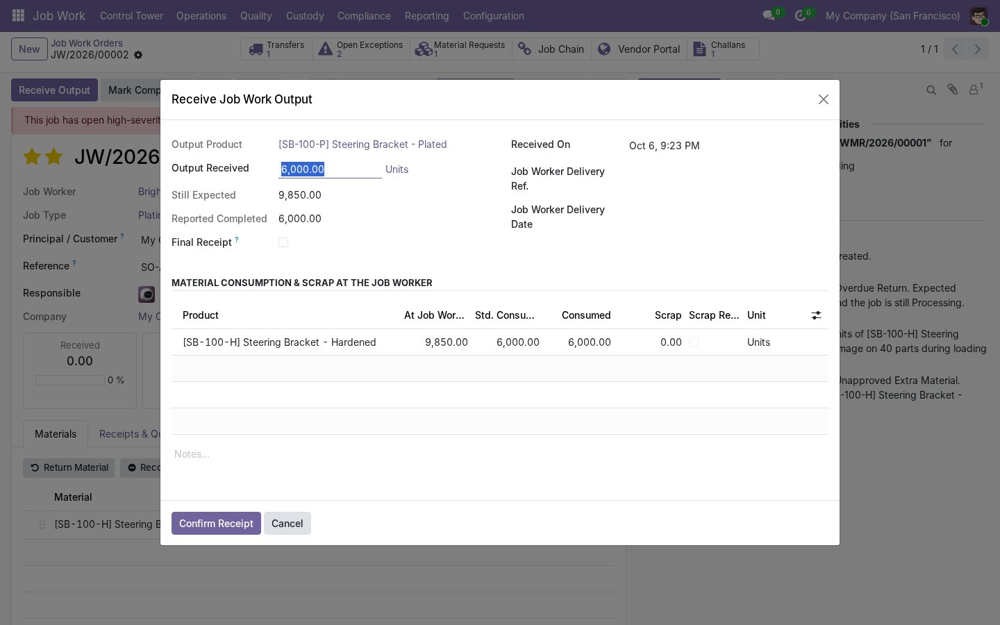
Sent vs consumed vs returned vs scrap vs approved loss, balance, value and age by job worker.
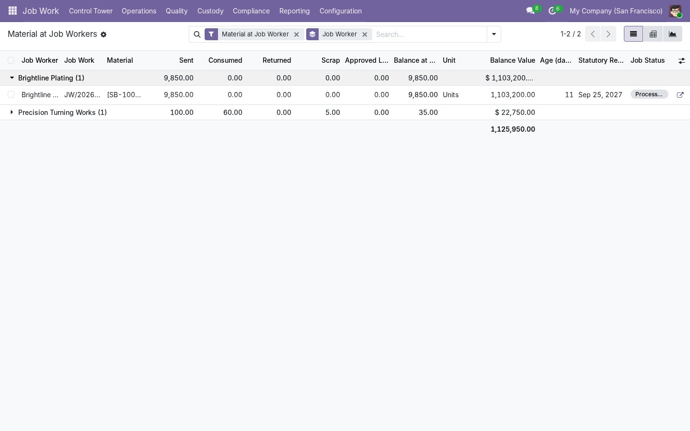
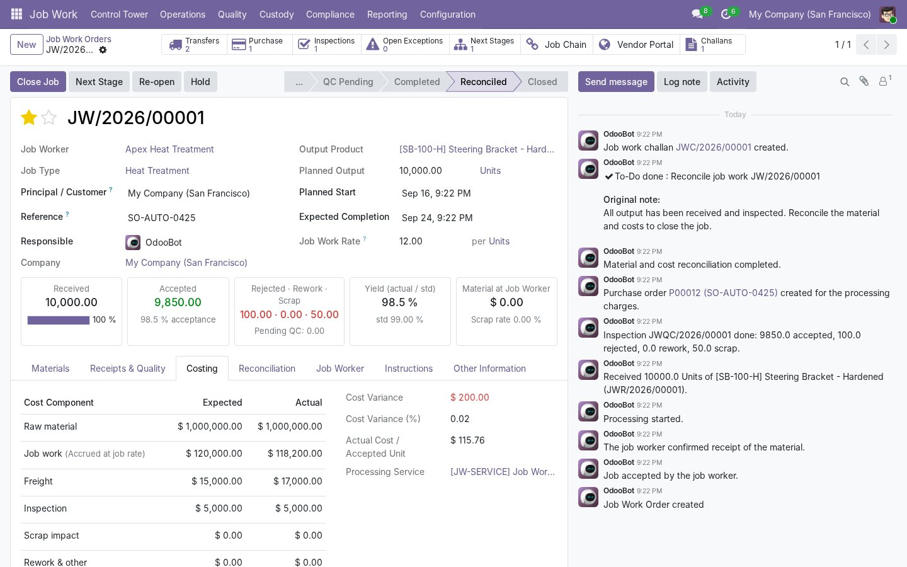
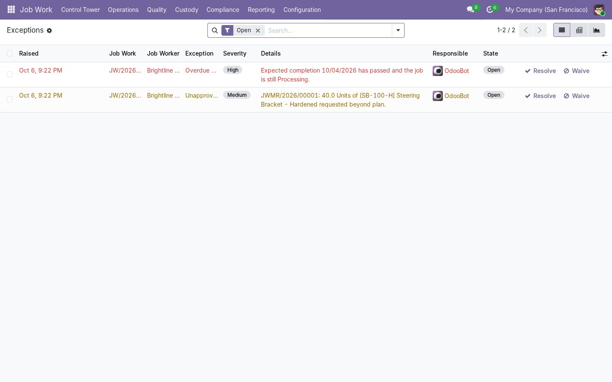
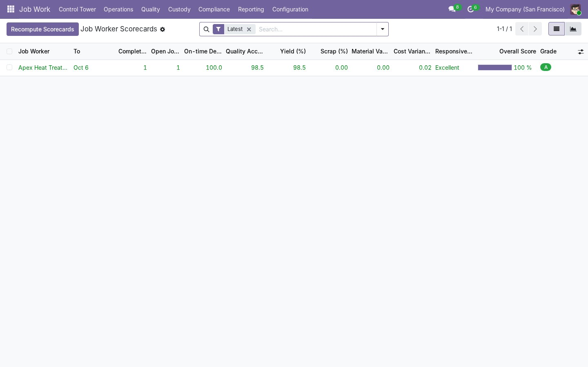
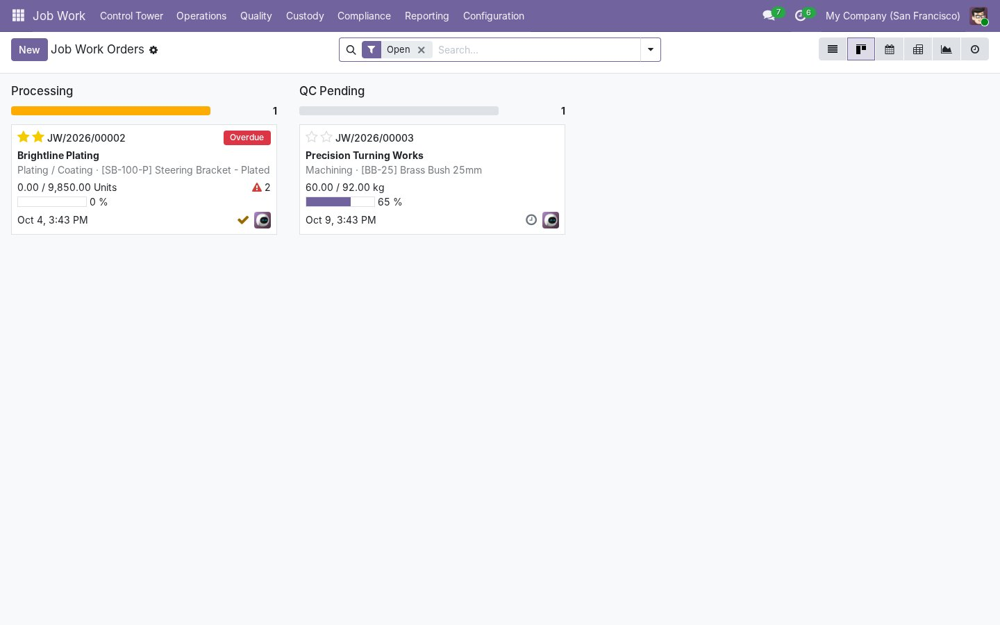
Deliberately simpler than the Odoo backend. Each job worker only sees its own jobs.
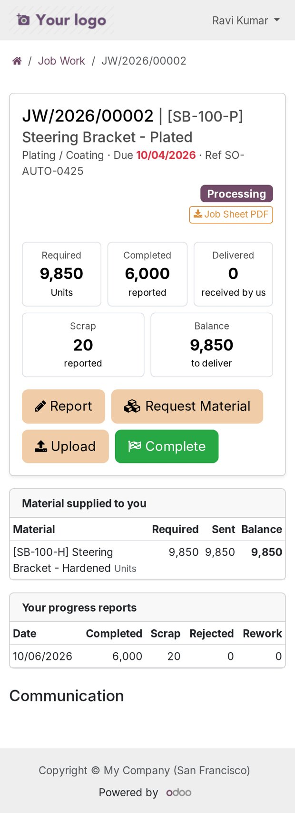
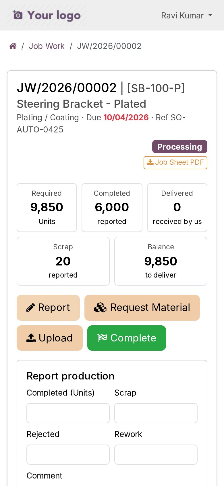
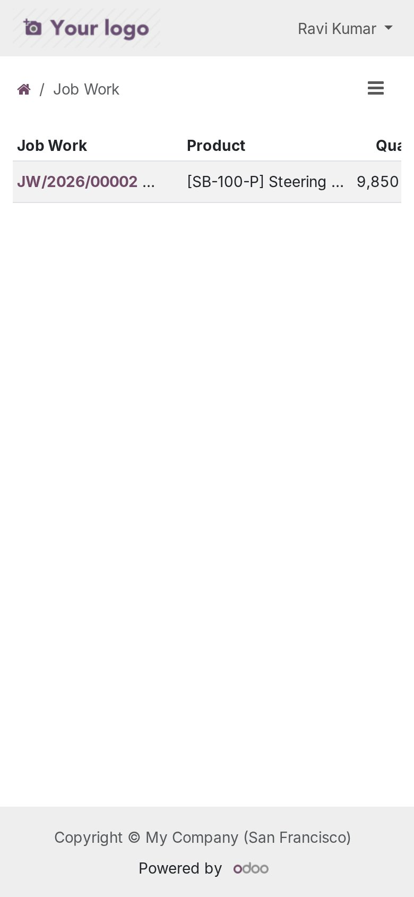
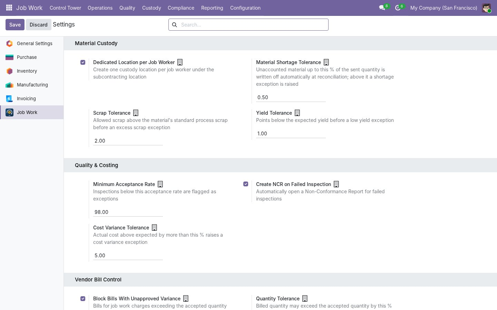
Odoo 19.0 Community and Enterprise, on-premise and Odoo.sh. Depends only on standard
modules: mrp_subcontracting, purchase_stock, portal.
ZivoIT Technologies configures Job Work 360 for your processes, migrates your data and connects it with your other systems.
Questions, demo, implementation, customization or integration?
ZivoIT Technologies · Odoo implementation partner